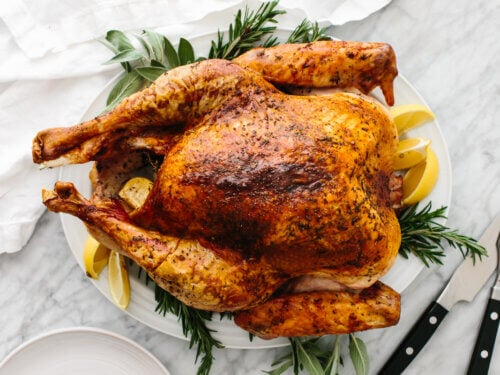

Thanksgiving Turkey

Description
IT'S THANKSGIVING TIME! With the mesmerizing pies, buttery side dishes, turkey is often cast-aside tastewise even while being the showstopper of the Thanksgiving dinner table. No amount of gravy can combat the dryness of your mother's turkey. This recipe can hopefully change that.
Ingredients:
Yields 10-16 servings.
- 12-20 pound turkey
- 1 onion, quartered
- 1 lemon, quartered
- 1 apple, quartered
- 0.75 ounce rosemary
- 0.75 ounce thyme
- 0.75 ounce sage
For the Herb Butter:
- 1 cup unsalted butter, softened
- 1 teaspoon salt
- 1/2 teaspoon black pepper
- 6-8 cloves garlic, minced
- chopped herbs
Steps:
- Let turkey sit at room temperature for at least an hour before preheating oven to 325 degrees F.
- Combine the ingredients for the herb butter with additional 1 tbsp chopped rosemary, 1 tbsp chopped thyme, 1/2 tbsp chopped sage.
- Remove the neck and giblets from inside the bird. Pat the Turkey dry with paper towels.
- Season cavity of turkey with salt and pepper. Stuff with lemon, onion, apple, and leftover herbs.
- Apply herb butter to area between skin and breasts.
- Tuck wings underneath the turkey and place on roasting rack inside roasting pan
- Bast melted herb butter over the the rest of the turkey>
- Roast at 325 degrees for about 13-15 minutes per pound.
- Once turkey is half-cooked, wrap with tinfoil to prevent the breast from overcooking.
- Rest for 30 minutes then enjoy!
Recipe credit goes to Lauren Allen
Return to Homepage